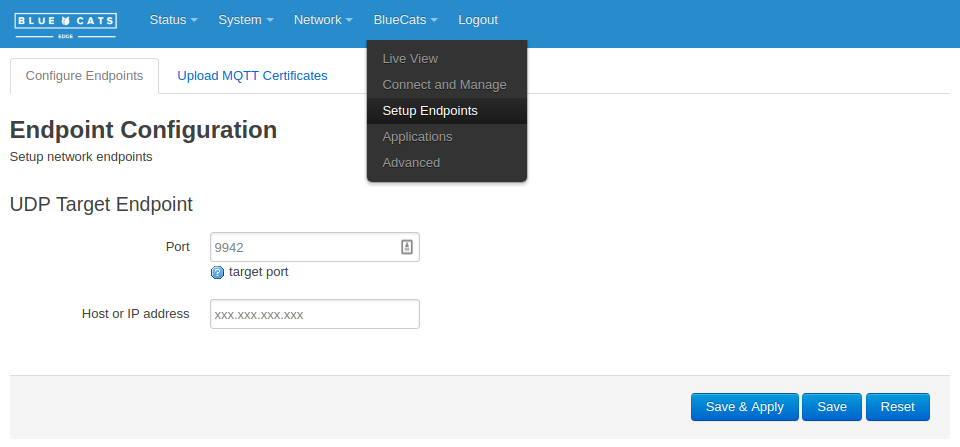
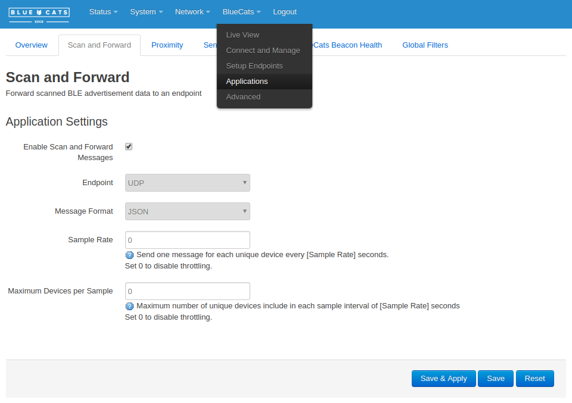
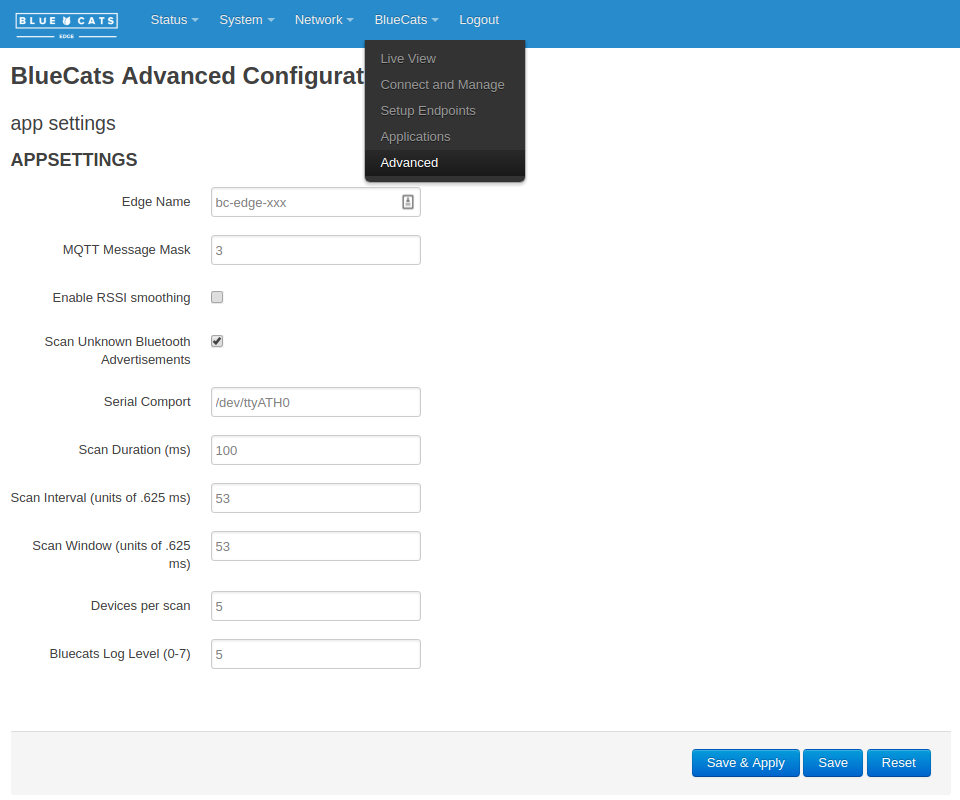

Configure a BlueCats Edge Relay
To interface with reelyActive's open source software
The BlueCats Edge Relay is a versatile BLE edge device which may be configured to scan and send all real-time packets to an endpoint running reelyActive open source software. This tutorial provides the steps to achieve such a configuration.
Connect to the Edge Relay
To access the web configuration utility
See BlueCats' GitHub page with all the steps for connecting your computer to Edge Relay so that you can access its web configuration utility. Additionally, follow the instructions to connect the Edge Relay to WiFi. It is not required to register with the BlueCats Cloud.
Configure the target endpoint
Define where to stream the data
From the BlueCats pull-down, select Setup Endpoints, then:
- leave the UDP target port as default (9942)
- enter the IP address of the endpoint running the reelyActive software (ex: 192.168.0.101)
Ignore the other endpoint settings and click Save & Apply
 Configure the application
Scan and Forward as JSON over UDP
From the BlueCats pull-down, select Applications and select the Scan and Forward tab, then:
- enable Enable Scan and Forward Messages
- select UDP endpoint
- select JSON message format
- leave Sample Rate as default (0)
- leave Maximum Devices per Sample as default (0)
Click Save & Apply
 Configure the advanced settings
Send all packets, even the unknown
From the BlueCats pull-down, select Advanced, then:
- enable Scan Unknown Bluetooth Advertisements
- leave all other settings as default
Click Save & Apply
 Confirm reception of the data stream
Listen on the target machine
Run an instance of hlc-server on the target machine to observe the real-time data (requires Node.js). Paste the following into a file called server.js:
const server = require('hlc-server');
var app = new server();
// Replace xxx below with the IP address of the server
app.bind( { protocol: "bluecats-udp", path: "xxx.xxx.xxx.xxx:9942" } );
Then from the command line, in the same folder as server.js, run the following:
npm install hlc-server to install the prerequisite software packages, then
node server to run the software.
Point your web browser to port 3001 of the server (ex: http://xxx.xxx.xxx.xxx.:3001) and observe the real-time data.
hlc-server
Dashboard
The bubblescape
Simply interested in the real-time data?

Our Pareto platform combines the convenience of SaaS with plug-and-play hardware.
What's next?
Experiment with our barnowl middleware, learn about other compatible gateways and hubs, or return to the diyActive home page.